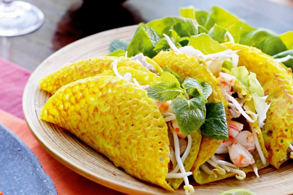

Bánh xèo miền Tây là món ăn dân gian rất nổi tiếng, hương vị đậm đà dân dã của món ăn khiến thực khách không thể nào quên được.
Xuất phát từ tiếng đổ bột vào chảo phát ra tiếng “xèo” mà loại bánh này được gọi tên là “bánh xèo”. Bánh có vị ngon đặc biệt, bánh mang những đặc trưng của văn hóa ẩm thực dân gian Nam Bộ.
Tùy theo sở thích của từng vùng, mà nhân bánh có thể là giá, đu đủ hoặc bông điên điển, thịt ba rọi, tép, thịt gà, hoặc thịt vịt bằm nhuyễn… Bánh được ăn kèm với nhiều loại rau như diếp cá, rau thơm, nhiều nơi bà con còn ăn với đọt xoài non, lá cách, lá lụa… nhưng nhất thiết không thể thiếu cải bẹ xanh.
Nước chấm cũng là một trong những yếu tố góp phần tăng vị ngon cho bánh xèo, nước mắm chấm bánh xèo phải có củ cải trắng, củ cải đỏ cắt sợi. Món bánh xèo không thể thiếu cải bẹ xanh
Nhiều nhà nghiên cứu văn hóa cho rằng thưởng thức bằng ngũ giác trong ẩm thực bánh xèo được ông cha ta áp dụng thực tế: nghe được tiếng xèo xèo khi chiên bánh, nhìn thấy sắc vàng của vỏ bánh, xanh của rau, đỏ, trắng, cam của nước chấm, nhân bánh… và ngửi được mùi thơm, nếm được vị ngon, béo. Độc đáo nhất là ăn bằng tay để cảm nhận được hết hương vị đặc trưng.
Cái ngon của bánh xèo miền Tây không chỉ từ cái bánh, mà hơn hết còn ở ý nghĩa sâu xa. Bởi, người Miền Tây không đổ bánh xèo mà ăn một mình. Thường thì phải cả gia đình xum họp.
Không có gì ngạc nhiên khi bánh xèo luôn hiện diện trong mâm cúng tết Đoan Ngọ, hay các dịp lễ – hội, đám tiệc khác. Bởi lẽ có thể nó từ lâu, bánh xèo đã trở thành món “quốc hồn” trong ẩm thực của người Nam Bộ.